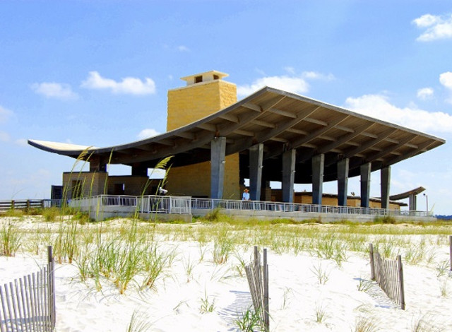
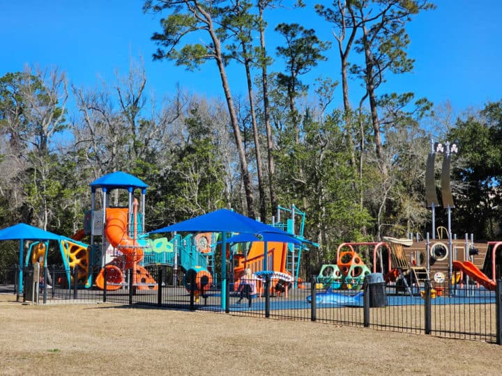

The Tourist Attractions of Orange Beach
Gulf State Park
This expansive park features beautiful beaches, nature trails, and a fishing pier. Visitors can enjoy hiking, biking, and wildlife viewing, along with access to pristine stretches of sand along the Gulf of Mexico.
Waterfront Park
A family-friendly destination with picnic areas, playgrounds, and a fishing pier. The park offers scenic views of the water and is a great spot for leisurely walks and outdoor activities.
